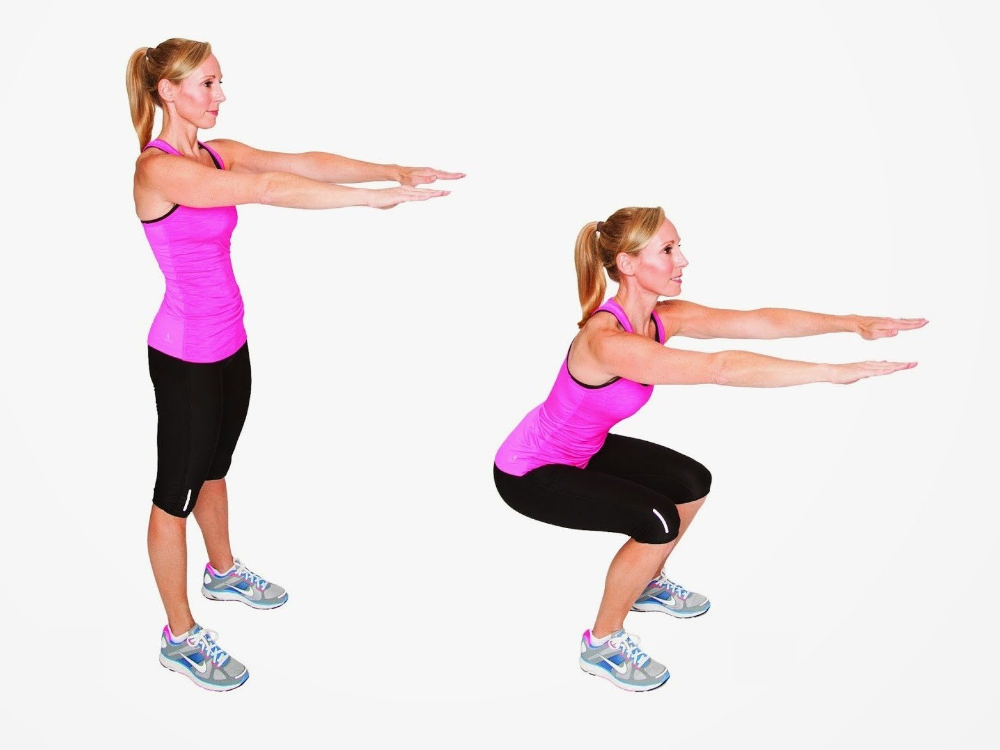
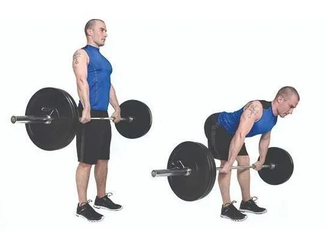

SENTADILLA
Preparación
- Posición inicial: Párate de pie con los pies separados a la anchura de los hombros, con las puntas de los pies ligeramente hacia afuera. Mantén la espalda recta y el core activado.
- Agarre: Puedes extender los brazos hacia adelante a la altura del pecho o cruzarlos sobre el pecho.
Ejecución
- Descenso: Flexiona las rodillas como si te fueras a sentar en una silla, manteniendo la espalda recta y el core activado. Asegúrate de que tus rodillas no se extiendan más allá de las puntas de los pies.
- Profundidad: Baja hasta que tus muslos estén paralelos al suelo o lo más que puedas sin comprometer la forma.
- Ascenso: Empuja el suelo con los talones para volver a la posición inicial. Mantén la espalda recta y el core activado durante todo el movimiento.

PESO MUERTO
Preparación
- Barra: Asegúrate de usar una barra con el peso adecuado para tu nivel de forma física. Comienza con un peso ligero y aumenta gradualmente a medida que vas ganando fuerza.
- Posición inicial: Párate de pie con los pies separados a la anchura de los hombros, con las puntas de los pies ligeramente hacia afuera. Colócate frente a la barra, con la barra en el suelo y las espinillas rozándola.
- Agarre: Agarra la barra con las manos separadas a la anchura de los hombros, con un agarre pronado (palmas hacia abajo). Mantén la espalda recta y el core activado.
Ejecución
- Descenso: Flexiona las rodillas y la cadera como si te fueras a sentar, manteniendo la espalda recta y el core activado. La barra debe deslizarse por tus muslos mientras bajas.
- Profundidad: Baja hasta que tus muslos estén casi paralelos al suelo o hasta donde puedas sin comprometer la forma.
- Ascenso: Empuja el suelo con los pies para volver a la posición inicial. Mantén la espalda recta y el core activado durante todo el movimiento. Exhala al subir.
- Bloqueo: Una vez que llegues a la posición inicial, contrae los glúteos y el core para bloquear la cadera.